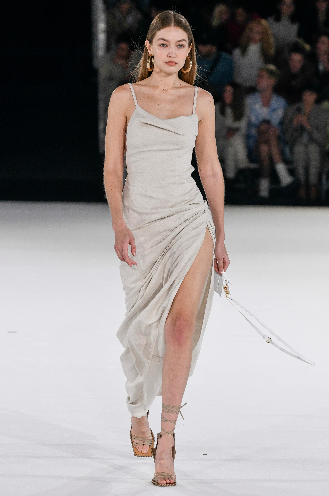
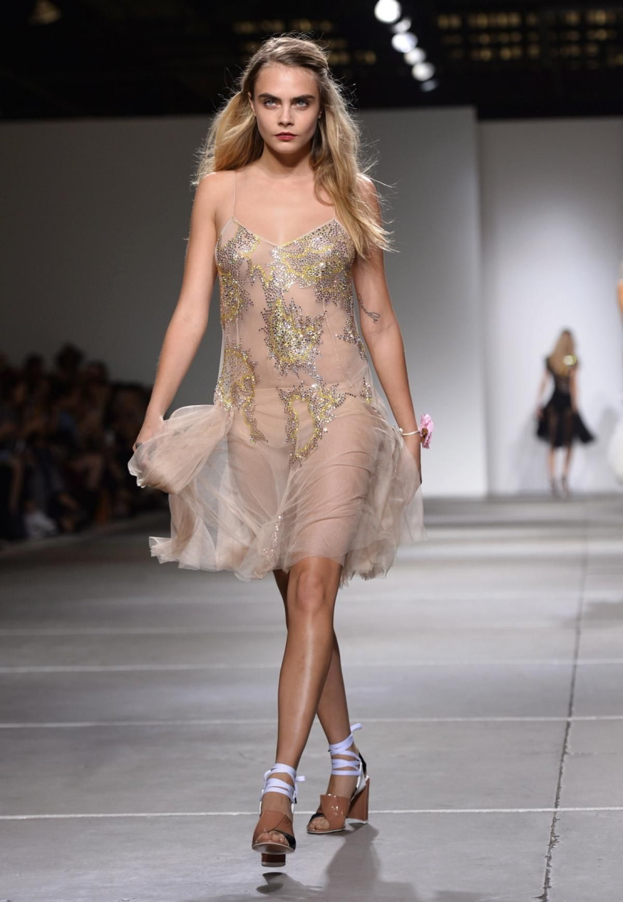
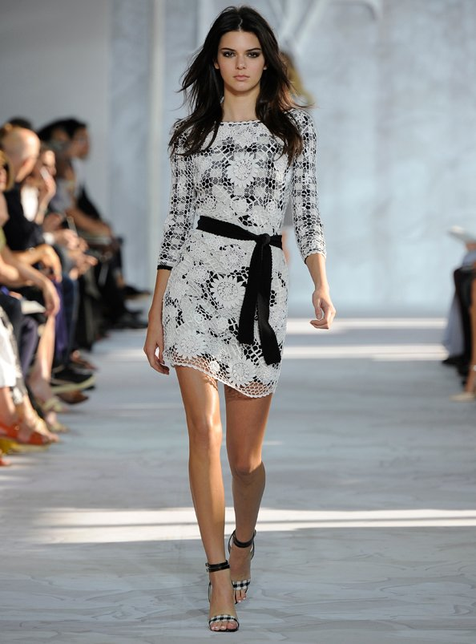

Careers
Gigi Hadid

1997–2012: First works
Paul Marciano, the co-founder of Guess, first noticed Hadid when she was two years old, sparking the start of her modelling career. She began modelling for Baby Guess before pausing to focus on her studies. In 2011, Hadid eventually went back to modelling. She re-started working with Marciano, and in 2012, she was chosen to represent a Guess ad. As an adult, Hadid has photographed three campaigns for Guess.
2013–2016: Popularity
Hadid made her New York Fashion Week debut in February 2014, walking for Desigual, after signing with IMG Models in 2013. She made her high-fashion debut in the same month by appearing on the cover of Carine Roitfeld's CR Fashion Book. Patrick Schwarzenegger, an actor and model, and she both appeared in Tom Ford's Eyewear autumn/winter campaign on July 15, 2014. On September 5, 2014, she co-hosted the Daily Front Row Fashion Media Awards ceremony in New York City. Aside from Tom Ford F/W 2014, Tom Ford Velvet Orchard Fragrance, and Tom Ford Beauty 2014 campaigns, Hadid has also appeared in them. In 2014, she appeared on the front cover of Galore.
2017-2022: increased recognition and brand partnerships
Starring in the Fendi and Moschino ads, Hadid kicked off the Spring/Summer campaign season. She also served as the face of the S/S 2017 advertising campaigns for DSQUARED2, Stuart Weitzman, and Max Mara accessories. In February 2017 for the Spring season, the second Tommy Hilfiger and Hadid ready-to-wear collection was unveiled. The Versus (Versace) Spring/Summer 2017 campaign, which included Hadid's ex-boyfriend, musician Zayn Malik, and model Adwoa Aboah, was photographed by Hadid. She also took the photos for Gigi's Journal, a special summer edition of V Magazine that contained Polaroids of friends, celebrities, and coworkers in the fashion business.Cara Delevinge
2002–2014: The start of her career
At the age of 10, Delevingne appeared with Lady Eloise Anson in an editorial photograph by Bruce Weber for Vogue Italia. She got a contract with Storm Management in 2009. Before securing a paying gig, she put through a year of work in the field. She also had to go through two seasons of auditioning before getting her first runway show.
2012-2014: Popularity
She began the early 2012 season by taking the runway at the Grand Palais for the Chanel Haute-Couture spring show . Delevingne participated in nine fashion shows during New York Fashion Week, the first of the "big four" fashion weeks, for designers such as Jason Wu, Rag & Bone, Thakoon, Donna Karan, Tory Burch, Oscar de la Renta, and Carolina Herrera. In contrast, she only walked for the Burberry Prorsum Womenswear A/W 2012 show during London Fashion Week. During Milan Fashion Week, she appeared in six shows and modelled for Fendi, Trussardi, Moschino, Blumarine, DSquared2, and Dolce & Gabbana.
2015-2022: Break
Many people saw that Delevingne had begun to pick and choose the shows she performed in. This marked the start of a decline in the number of catwalk jobs, which at the time was attributed to her growing acting career[36]. However, in an essay for Time published in 2016, Delevingne revealed the true reason for the decline in show appearances.Kendall Jenner

2009-2014: Launched Career
When Wilhelmina Models signed Jenner on July 12, 2009, she started modelling at the age of 13. The Wilhelmina picture session was directed by cinematographer Nick Saglimbeni. In December 2009 and January 2010, Jenner worked as a model for Forever 21's Rocker Babes with a Twist campaign. On April 19, 2010, Jenner was depicted in a Teen Vogue Snapshot.